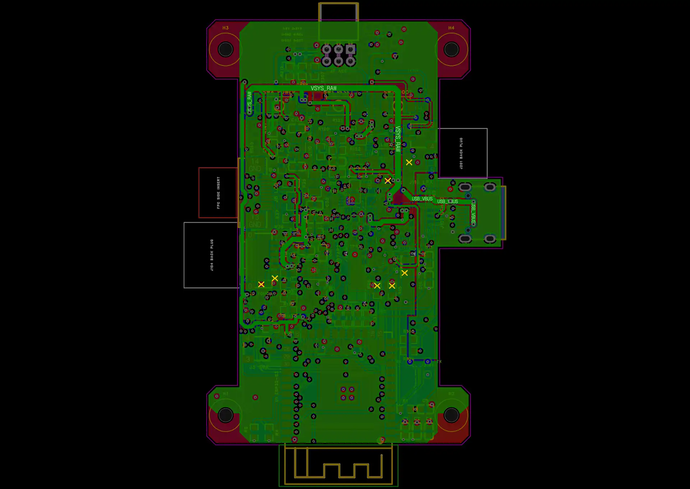

器灵内核 · V0.7.4P2 · 2026-10-25
电源层信号已迁出，四层结构保留
逐网指定路径完成顶、底层迁线，并在嘉立创中保存、重铺铜、检查及导出。当前原生项目名称仍为 Spirit_V074N_Manual_Routed_Final_20261025，主板丝印已更新为 V074P2。
322 → 0电源层非供电走线
36 → 0电源层非供电网络
0 / 0主板 / 适配板 DRC
4 层既定叠层保持
按层检查实际铜区
GND+3V3+5V_SYSVSYS_RAWVBAT_PROTUSB_VBUSUSB_5V_FUSED整改前非供电走线
内层2：仅6个供电走线网络、3V3铜区及USB局部地参考。非供电走线为0。

按嘉立创最终原生回读数据绘制，点图可放大。通孔焊盘和贯穿过孔仍可见，它们不代表该层存在信号走线；天线伸出区域保持禁铜。图中不叠加其它层的走线。
复核结果
| 项目 | 结果 |
|---|
| 原生 DRC / 未连接 | 主板 0 / 0，适配板 0 / 0 |
| 电源层与地平面 | L3 非供电走线 0；L2 无走线、GND 连续 |
| 网络连通 | 全部焊盘、过孔网络连通；重建原生覆铜 |
| 走线角度与间距 | 非45°线段 0；普通非135°折角 0；几何间距错误 0 |
| 布局与重叠 | 129个元件位置保留，同面包络重叠 0 |
| 板框、孔位、USB、天线 | 板框/孔位不变，USB逐条保留，天线禁铜通过 |
| 制造规则 | 保留原规则；最小过孔焊盘 0.45mm、孔径 0.2mm |
| 原生工程与导出 | 回读/导出几何一致，适配板不变 |
角度检查排除焊盘/过孔内部、分支节点和极短线段；等长记录不替代USB阻抗验证。未使用自动布线。
交付边界
本次闭合的是“专用电源层混入信号”的整改。实屏FPC匹配、NFC线束、工厂叠层与阻抗、整机功耗/温升/射频及装配仍按原有待验证项处理。旧壳体STL尚未同步当前孔位和横插J7。
主板和适配板已保存并导出，未下单；本次检查结果不等同于实物或量产验收。
铜区辅助检查范围
解析后的表层铜区另有4片不带焊盘/过孔/走线的铜片，总面积约2.538mm²。它们不造成焊盘网络未连接；本次未声称所有表层铜片均连续。原生删除孤岛设置保持。见 辅助记录。
嘉立创原生整板预览与完整记录

原生整板图会叠加多个可见层；上方分层图更适合核对本次整改。
器灵 PCB V0.7.4P2 四层电源层整改 — 2026-10-25
用户指出电源层混入信号并要求完成整改。沿用用户禁止自动布线的要求，本次逐网明确指定路径，信号手工迁至顶/底层，脚本只落实指定坐标与检查几何，不进行自动寻路。
当前嘉立创原生项目：Spirit_V074N_Manual_Routed_Final_20261025
项目UUID：3f352afa1c134bfda38c18fe4b2307f1
主板UUID：5354a7bf4c630a18；丝印 V074P2
适配板UUID：cff5d61a47594b34；保持 V0.2 原设计
项目名称保留，主板内容已更新并保存。导出工程与最终原生回读核对一致。
整改结果：
- 保持4层：顶层/底层布信号；内层1为连续GND平面，无走线；内层2只保留供电走线、3V3铜区及USB局部GND参考铜。
- 原内层2的36个非供电网络、322段走线已全部迁出。当前内层2非供电网络0、非供电走线0，供电走线124段、6个供电网络。
- 内层2走线网络：+3V3、+5V_SYS、VSYS_RAW、VBAT_PROT、USB_VBUS、USB_5V_FUSED。过孔和通孔焊盘可以贯穿内层；不等于在该层布信号线。
- 主板129个元件位置、封装、网表、板框、四凸耳孔位不变；适配板不变。孔距38×61.5mm、板长71.5mm保留，ESP32-S3天线朝下伸出。
- 保留原设计规则，过孔最小焊盘0.45mm/孔径0.2mm（原生单位换算有微小取整）。当前主板1815段走线、411个过孔。
- 迁线后重建原生覆铜，并补充必要的接地跨层连接；未强制保留孤岛，keepIsland=false保留。
验证结果：
- 主板、适配板原生DRC均0，未连接均0。
- 全部焊盘/过孔网络连通检查通过；内层1 GND铜区为单一连续区域，约2232.004mm²。
- 非45°线段0，普通非135°折角0；检查不把焊盘/过孔内部、分支节点和极短线段误判为普通折角。
- 几何间距错误0，同面元件包络重叠0；最小包络间隔约0.218mm（Q102/R123）。
- 安装孔周铜间距、板边、天线禁铜检查通过。天线伸出区域保持无铜。
- USB走线逐条保持；DP/DM网络总长约34.419897/34.419897mm。等长不替代工厂叠层和90Ω阻抗确认。
- 原生导出与最终回读几何匹配；路径坐标最大归一化差约0.000001754mm。
辅助几何检查边界：表层覆铜拆分得到4个不包含焊盘/过孔/走线的铜片（约2.522、0.00979、0.00462、0.00213mm²）。它们不导致网络未连接；未将“所有表层铜都连续”列为通过项。原生删除孤岛设置保留。详见铜区连通辅助记录.json。
仍待原有实物/生产终检：GC9A01实屏FPC针序/接触面、NFC与线束、USB工厂叠层/阻抗、整机功耗/温升/射频、装配试插。旧STL安装柱和横插J7结构尚未同步至当前PCB，不应当作当前可直接装配的壳体。使用M2尼龙螺丝/塑料柱的既有约束保留。未下单，不把本次电源层整改和DRC通过等同于量产验收。
工程SHA256：91f98a6b814fc09c0c2c373c8ff85c472692dfb9b87beb33181e571d1ba92cb5